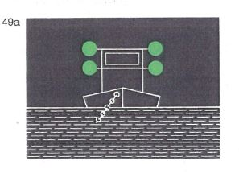
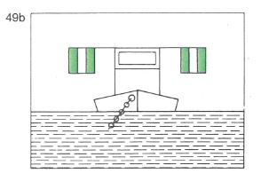
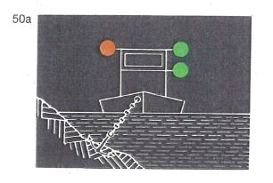
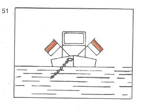

| 1. | Schwimmende Geräte bei der Arbeit und Fahrzeuge, die im Fahrwasser Arbeiten, Peilungen oder Messungen ausführen und dabei stillliegen, müssen führen: |
| | a) | nach der Seite oder den Seiten, wo die Durchfahrt frei ist: | |
| | | - bei Nacht: | |
| | | zwei grüne gewöhnliche Lichter oder zwei grüne helle Lichter, |  |
| | | - bei Tag: | |
| | | entweder das Tafelzeichen E.1 (Anlage 7) oder zwei grüne Doppelkegel etwa 1,00 m übereinander und gegebenenfalls |
| | |  |  |
| | b) | nach der Seite, wo die Durchfahrt nicht frei ist: | |
| | | - bei Nacht: |  |
| | | ein rotes gewöhnliches Licht oder ein rotes helles Licht in gleicher Höhe und von gleicher Stärke wie das nach Buchstabe a gezeigte oberste grüne Licht, |
| | | - bei Tag: |  |
| | | entweder das Tafelzeichen A.1 (Anlage 7) in gleicher Höhe wie das Tafelzeichen nach Buchstabe a |
| | | oder einen roten Ball in gleicher Höhe wie der oberste Doppelkegel nach Buchstabe a, |  |
| | | oder, wenn diese Fahrzeuge gegen Wellenschlag geschützt werden müssen, |
| | c) | nach der Seite oder den Seiten, wo die Durchfahrt frei ist: | |
| | | - bei Nacht: |  |
| | | ein rotes gewöhnliches und ein weißes gewöhnliches Licht oder ein rotes helles und ein weißes helles Licht, das rote Licht etwa 1,00 m über dem weißen, |
| | | - bei Tag: |  |
| | | eine Flagge, deren obere Hälfte rot und deren untere Hälfte weiß ist, oder zwei Flaggen übereinander, die obere rot, die untere weiß, und gegebenenfalls |
| | d) | nach der Seite, wo die Durchfahrt nicht frei ist: | |
| | | - bei Nacht: | |
| | | ein rotes Licht in gleicher Höhe und von gleicher Stärke wie das nach Buchstabe c gezeigte rote Licht, | |
| | | - bei Tag: | |
| | | eine rote Flagge in gleicher Höhe wie die rot-weiße Flagge oder die rote Flagge auf der anderen Seite. | |
| | Diese Zeichen sind so hoch zu setzen, daß sie von allen Seiten sichtbar sind. Die Flaggen können durch Tafeln gleicher Farbe ersetzt werden. |
| 2. | Festgefahrene oder gesunkene Fahrzeuge müssen die Bezeichnung nach Nummer 1 Buchstabe c und d führen. Liegt ein gesunkenes Fahrzeug so, dass die Zeichen nicht auf ihm angebracht werden können, müssen sie auf Nachen, Tonnen oder in anderer geeigneter Weise gesetzt werden. |
| |  |  |
| 3. | Die zuständige Behörde kann von der Führung der Bezeichnung nach Nummer 1 Buchstabe a und b befreien. |